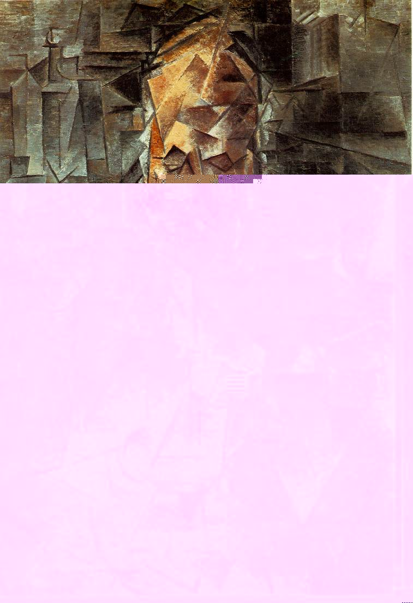

Questo collezionista e mercante d'arte amico di Picasso, si prestò per questo ritratto cubista, dove appare evidente l'intento di Picasso di evidenziare la dimensione concettuale rispetto alla verosimiglianza fotografica. La composizione è resa attraverso il frazionamento del personaggio e dello sfondo che risultano quindi sullo stesso piano. Perciò qui il cubismo si profila come una ricerca, attraverso un espediente grafico (il frazionamento), della Realtà delle cose.